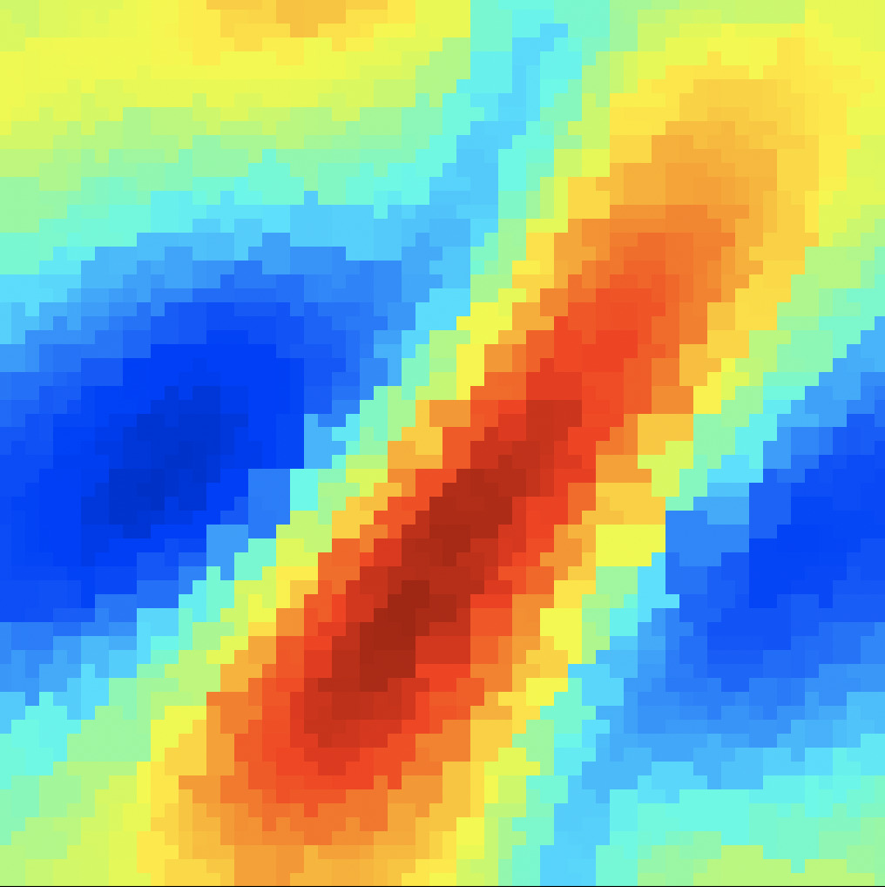

<!DOCTYPE html>
<html lang="en">
<head>
    <meta charset="UTF-8">
    <title>Title</title>
    <link rel="stylesheet" href="../../../css/custom.css">
    <script src="https://d3js.org/d3.v5.min.js"></script>
    <script type="text/javascript"
            src="https://cdnjs.cloudflare.com/ajax/libs/mathjax/2.7.0/MathJax.js?config=TeX-MML-AM_SVG">
        MathJax.Hub.Config({
            tex2jax: {
                inlineMath: [['$', '$'], ['\\(', '\\)']],
                processEscapes: true
            }
        });
    </script>
</head>
<body>
<script>
    var margins = {
        top: 10,
        bottom: 10,
        left: 10,
        right: 10
    }

    var p = {}

    var width = window.innerWidth;
    var height = window.innerHeight;


    var color = d3.scaleOrdinal(d3.schemeCategory10);

    var graph = d3.select("body").append("svg")
        .attr("preserveAspectRatio", "xMinYMin meet")
        .attr("viewBox", [0, 0, width, height])

    xScale = d3.scaleLinear()
        .domain([0, 1])
        .range([margins.left, width - margins.right]);
    yScale = d3.scaleLinear()
        .domain([0, 1])
        .range([margins.top, height - margins.bottom]);


    var n_cells = 5
    var cell_size = (xScale(1) - xScale(0)) / n_cells

    // assets/initial.jpg
    img_size = (yScale(1) - yScale(0)) * 0.8
    graph.append("foreignObject")
        .attr("x", xScale(0))
        .attr("y", yScale(0.5) - img_size / 2)
        .attr("width", img_size)
        .attr("height", img_size)
        .append("xhtml:body")
        .html('')
    graph.append("text")
        .attr("x", xScale(0) + img_size / 2)
        .attr("y", yScale(0.5) - img_size / 2)
        .attr("text-anchor", "middle")
        .text("Sparse IC")
        .attr("font-family", "sans-serif")

    graph.append("foreignObject")
        .attr("x", xScale(0))
        .attr("y", yScale(0.5) + img_size / 2)
        .attr("width", img_size)
        .attr("height", 50)
        .append("xhtml:div")
        .style("text-align", "center")
        .style("font-size", "15px")
        .html("$s_{x, y}[t=0]$");


    var interp_x = xScale(0.2)
    var interp_y = yScale(0.75)
    var interp_width = xScale(0.2)
    var interp_height = yScale(0.20)

    // Interpolator
    graph.append("rect")
        .attr("x", 1.5*cell_size - interp_width/2)
        .attr("y", interp_y)
        .attr("width", interp_width)
        .attr("height", interp_height)
        .attr("stroke", "#277C9D")
        .attr("rx", 5)
        .attr("stroke-width", 3)
        .attr("fill", "white")
        .style("filter", "drop-shadow(5px 5px 4px rgba(0, 0, 0, 0.55))")

    graph.append("text")
        .attr("x", 1.5*cell_size)
        .attr("y", interp_y + interp_height / 2)
        .attr("text-anchor", "middle")
        .text("Interpolator")
        .attr("font-family", "sans-serif")
        .attr("font-size", "15px")
        .attr("dominant-baseline", "middle")
        .attr("fill", "#277C9D")

    // Query point
    var query_height = yScale(0.5)
    var start_y = yScale(0.05) + query_height / 2
    graph.append("rect")
        .attr("x", 1.5*cell_size - query_height / 2)
        .attr("y", start_y - query_height / 2)
        .attr("width", query_height)
        .attr("height", query_height)
        .attr("fill", "white")
        .attr("stroke", "black")
        .attr("stroke-width", 2)

    graph.append("text")
        .attr("x", 1.5*cell_size)
        .attr("y", start_y - query_height / 2)
        .attr("dy", '-0.5em')
        .attr("text-anchor", "middle")
        .text("Query position")
        .attr("font-family", "sans-serif")
        .attr("font-size", "15px")
        .attr("dominant-baseline", "middle")

    graph.append("rect")
        .attr("x", 1.5*cell_size - query_height / 2 + 60)
        .attr("y", start_y - 25)
        .attr("width", query_height * 0.1)
        .attr("height", query_height * 0.1)
        .attr("fill", "black")
        .attr("stroke-width", 0)

    graph.append("text")
        .attr("x", 1.5*cell_size - query_height / 2 + 65)
        .attr("y", start_y)
        .attr("text-anchor", "middle")
        .text("(x, y)")
        .attr("font-family", "sans-serif")
        .attr("font-size", "15px")
        .attr("dominant-baseline", "middle")
        .attr("fill", "black")


    // interpolated IC
    graph.append("foreignObject")
        .attr("x", 2.5*cell_size - img_size / 2)
        .attr("y", yScale(0.5) - img_size / 2)
        .attr("width", img_size)
        .attr("height", img_size)
        .append("xhtml:body")
        .html('')
    graph.append("text")
        .attr("x", 2.5*cell_size)
        .attr("y", yScale(0.5) - img_size / 2)
        .attr("text-anchor", "middle")
        .text("Sparse IC")
        .attr("font-family", "sans-serif")


    graph.append("foreignObject")
        .attr("x", 2*cell_size)
        .attr("y", yScale(0.5) + img_size / 2)
        .attr("width", cell_size)
        .attr("height", 50)
        .append("xhtml:div")
        .style("text-align", "center")
        .style("font-size", "15px")
        .html("$s(x, y, t=0)$");


    // GNN
    graph.append("rect")
        .attr("x", 3.5*cell_size - interp_width/2)
        .attr("y", yScale(0.5) - interp_height/2)
        .attr("width", interp_width)
        .attr("height", interp_height)
        .attr("stroke", "#598938")
        .attr("rx", 5)
        .attr("stroke-width", 3)
        .attr("fill", "white")
        .style("filter", "drop-shadow(5px 5px 4px rgba(0, 0, 0, 0.55))")

    graph.append("text")
        .attr("x", 3.5*cell_size)
        .attr("y", yScale(0.5))
        .attr("text-anchor", "middle")
        .text("GNNs + Neural ODEs")
        .attr("font-family", "sans-serif")
        .attr("font-size", "15px")
        .attr("dominant-baseline", "middle")
        .attr("fill", "#598938")

    // video
    graph.append("foreignObject")
        .attr("x", 4.5*cell_size - img_size / 2)
        .attr("y", yScale(0.5) - img_size / 2)
        .attr("width", img_size)
        .attr("height", img_size)
        .append("xhtml:body")
        .html("<video data-autoplay src='assets/dino.mp4' autoplay='true' loop='true' muted='true' width='100%'></video>")


    graph.append("foreignObject")
        .attr("x", 4*cell_size)
        .attr("y", yScale(0.5) + img_size / 2)
        .attr("width", cell_size)
        .attr("height", 50)
        .append("xhtml:div")
        .style("text-align", "center")
        .style("font-size", "15px")
        .html("$s(x, y, t)$");

    var defs = graph.append("defs");
    defs.append("marker")
        .attr("id", "arrow")
        .attr("markerWidth", 10)
        .attr("markerHeight", 10)
        .attr("refX", 5)
        .attr("refY", 3)
        .attr("orient", "auto")
        .attr("markerUnits", "strokeWidth")
        .append("path")
        .attr("d", "M0,0 L0,6 L6,3 z")

    var x1 = xScale(0) + img_size -7
    var y1 = yScale(0.5)
    var x2 = 1.5*cell_size - interp_width/2
    var y2 = interp_y + interp_height/2
    graph.append("path")
        .attr("d", "M" + x1 + "," + y1 +
            " L" + (x1 + (x2-x1)/2) + "," + y1 +
            " L" + (x1 + (x2-x1)/2) + "," + y2 +
            " L" + (x2-1) + "," + y2)
        .attr("stroke", "black")
        .attr("stroke-width", 1)
        .attr("fill", "none")
        .attr("marker-end", "url(#arrow)")

    graph.append("line")
        .attr("x1", 1.5*cell_size)
        .attr("y1", start_y + query_height / 2)
        .attr("x2", 1.5*cell_size)
        .attr("y2", interp_y-1)
        .attr("stroke", "black")
        .attr("stroke-width", 1)
        .attr("fill", "none")
        .attr("marker-end", "url(#arrow)")

    var x1 = 1.5*cell_size + interp_width/2
    var y1 = interp_y + interp_height/2
    var x2 = 2.5*cell_size - img_size/2 + 7
    var y2 = yScale(0.5)
    graph.append("path")
        .attr("d", "M" + x1 + "," + y1 +
            " L" + (x1 + (x2-x1)/2) + "," + y1 +
            " L" + (x1 + (x2-x1)/2) + "," + y2 +
            " L" + (x2-1) + "," + y2)
        .attr("stroke", "black")
        .attr("stroke-width", 1)
        .attr("fill", "none")
        .attr("marker-end", "url(#arrow)")

    graph.append("line")
        .attr("x1", 2.5*cell_size + img_size/2 - 7)
        .attr("y1", yScale(0.5))
        .attr("x2", 3.5*cell_size - interp_width/2)
        .attr("y2", yScale(0.5))
        .attr("stroke", "black")
        .attr("stroke-width", 1)
        .attr("fill", "none")
        .attr("marker-end", "url(#arrow)")

    graph.append("line")
        .attr("x1", 3.5*cell_size + interp_width/2)
        .attr("y1", yScale(0.5))
        .attr("x2", 4.5*cell_size - img_size/2 + 7)
        .attr("y2", yScale(0.5))
        .attr("stroke", "black")
        .attr("stroke-width", 1)
        .attr("fill", "none")
        .attr("marker-end", "url(#arrow)")


</script>
</body>
</html>